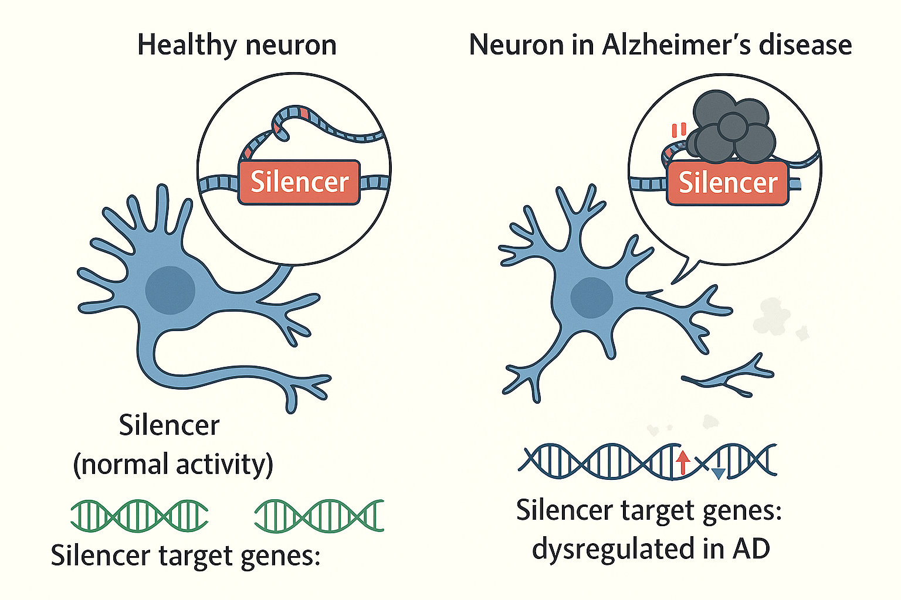

Research
Alzheimer's Disease (AD) is a neurodegenerative disorder that primarily affects older adults, leading to memory loss and cognitive decline. In AD, neurons die, and harmful plaques and tangles build up, impairing brain function. Current treatments like Aducanumab, Lecanemab, and Donanemab have limited effectiveness and significant side effects, highlighting the need for new approaches.
My goal is to contribute to a deeper understanding of what happens in the brain during AD to support the development of more effective interventions.
1. Studying LINE1 in Alzheimer's DiseaseLong Interspersed Nuclear Elements (LINE1 or L1), are pieces of DNA capable of moving around in the genome. In AD, LINE1 activity becomes dysregulated, leading to increased mobility that can damage DNA and exacerbate disease progression. My research focuses on understanding how LINE1 activity contributes to neuronal damage and exploring ways to detect and mitigate its harmful effects to slow AD progression. |

|
2. Understanding Silencers in Alzheimer's DiseaseSilencers are regulatory DNA elements that suppress gene activity to maintain balance in the genome. In AD, silencers may mistakenly turn off key neuroprotective genes, increasing the brain's vulnerability. My research aims to identify these silencers and understand their impact on AD, with the ultimate goal of protecting essential brain functions and mitigating the progression of the disease. |
 |